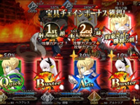

Fate GrandOrder
- 世界観
- バトルシステム
- 切り札(宝具)
- ガチャ
- クラスの紹介
世界観
Fate Grand Oderとは『Fate/stay night』をはじめとする数多くのFateシリーズのひとつとして2015年7月に始まった、TYPE-MOONが手掛けるスマートフォン向けRPG。未来が失われた世界でプレイヤーはマスターとなり、英霊と呼ばれるキャラクターたちを従えて過去へ遡り、聖杯探索と呼ばれる旅に出ることになる。 制作にはTYEP-MOON 武内崇や奈須きのこをはじめとするクリエーター陣が参加し、さらに、作品を彩る豪華声優陣が集結！メインストーリーに加え、サーヴァントごとに個別のストーリーがあり、100万文字を超えるボリュームのシナリオが展開される。

バトルシステム
バトルは、タクティカルフェイズとコマンドフェイズから成り、マスターが選択したカードの結果に応じて、サーヴァントが攻撃します。その後、敵側のリアクションがあり、１ターンが終了となります。カードの種類は全部で3枚あり、ランダムで排出されます。赤いカードがBuster、青いカードがArts、緑のカードがQuickと呼ばれています。赤いカードは主に火力メインで、青いカードは必殺技に必要なNP(ノーブルファンタズム)を貯めやすくするカードです。緑色のカードは次のターンにクリティカルを出せやすくするスターを集められます。同じキャルクターのカードを同一に揃えると通常は発生しないエキストラアタックが発生し、追加の一撃を加えることができます。他にもタクティカルフェイズでは、サーヴァント毎に保有する固有スキルの使用が可能です。その場の状況で判断し戦況を有利に立ち回りましょう。
サーヴァントの持つ切り札＝宝具
全てのサーヴァントが、宝具と呼ばれる切り札を持っています。バトル中の行動で貯蓄されたNP(※上記参照)が100％以上に達した際、必殺技として使用することができます。更に、同一のターンに２騎以上のサーヴァントの宝具を発動することで、より強力な効果を得ることもできます。そして、なんと言ってもカッコいい新規サーヴァントなどでは宝具演出が特殊なものが多く増えており、今後も目が離せません！
守護英霊召喚システム・フェイト(ガチャ)
何と言ってもこのゲームのメインとも言えるガチャシステム。星１から星５まで上限があり、星四以上がレアキャラとなっています。なんと最高レアリティ星５の排出率がたった１％！低すぎるっ！！星四でもたった３％！星５が当たるなんて夢のまた夢なのでしょうか...。ですが一年に二度、星５確定ガチャがくることも（※有料の石しか使えません）もうちょっとガチャ率あげてくれるのを期待して待つしかありませんね！
クラスの紹介
各サーヴァントには「クラス」が割り当てられています。三騎士と呼ばれる、サイバー、アーチャー、ランサー。四騎士と呼ばれる、ライダー、キャスター、アサシン、バーサーカー、全てを含めて七騎士と呼ばれる。エキストラクラスのシールダーからフォリナーまで、その中の七騎士クラスについての紹介したいと思います。
セイバー(Saber)
セイバーとは「剣士」の英霊。ランサーに強く、アーチャーに弱い。
アーチャー(Archer)
アーチャーとは「弓兵」の英霊。セイバーに強く、ランサーに弱い。
ランサー(Lancer)
ランサーとは「槍兵」の英霊。アーチャーに強く、セイバーに弱い。
ライダー(Rider)
ライダーとは「騎兵」の英霊。キャスターに強く、アサシンに弱い。
キャスター(Caster)
キャスターとは「魔術師」の英霊。アサシンに強く、ライダーに弱い。
アサシン(Assassin)
アサシンとは「暗殺者」の英霊。ライダーに強く、キャスターに弱い。

バーサーカー(Berserker)
バーサーカーとは「狂戦士」の英霊。全クラスに強く、全クラスに弱い。
ストーリーの紹介
特異点F/X 炎上汚染都市 冬木 『序章』から始まり、第一特異点 邪竜百年戦争 オルレアン『救国の聖処女』、 第二特異点 永続狂気帝国 セプテム『薔薇の皇帝』、 第三特異点 封鎖終局四海 オケアノス『嵐の航海者』、 第四特異点 死界魔霧都市（ミストシティ） ロンドン『ロンディニウムの騎士』、 第五特異点 北米神話大戦 イ・プルーリバス・ウナム『鋼鉄の白衣』、 第六特異点 神聖円卓領域 キャメロット『輝けるアガートラム』、 第七特異点 絶対魔獣戦線 バビロニア『天の鎖』、終局特異点 冠位時間神殿 ソロモン『極天の流星雨』の全部で九つの特異点が第一部のシナリオとなる。 時は西暦2015年、魔術がまだ成立していた最後の時代。人類の営みを永遠に存在させるために秘密裏に設立された人理継続保障機関フィニス・カルデアで、「2016年を最後に、人類は絶滅する」という研究結果が“ 証明 ”された。 原因を調査するうち、カルデアの魔術サイドによって作り上げられた「近未来観測レンズ・シバ」は、突如として過去・西暦2004年の日本のある地方都市に観測不能領域の出現を検知する。ありえない事象にカルデア機関員達は、これこそ人類史が狂い絶滅に至る理由と仮定、テスト段階ではあったが理論上は可能レベルになった霊子転移（レイシフト）による時間遡行を実行する。その目的は2004年に行われた「聖杯戦争」に介入し、狂った歴史を正す事であった。 カルデアは、「守護英霊召喚システム・フェイト」の力を借りてサーヴァントを召喚し、「聖杯探索」（グランドオーダー）を行うマスター候補たちを過去へと送り込もうとするが、レイシフト直前の"事故"により、マスター候補が数合わせとしてカルデアの機関員に迎えられた一般人の若者1人を残して全滅という最悪の事態に直面する。駆けつけたその若者と、その手に寄り添った瀕死の少女マシュ・キリエライトが、突如として実行されたレイシフトの対象に選ばれ、炎に包まれた聖杯戦争の舞台…かつて「冬木市」と呼ばれた場所の特異点に降り立った。 やがてカルデアは、人類を救うための鍵がさらに7つの歴史上の異変・特異点にあることを突き止める。歴史を遡り運命と戦う禁断の儀式は、未来を懸けた過去への挑戦として幕を開けるのだった。
最後に一言
私がこのゲームを知ったのは高校の友達が誘ってくれたのがキッカケです。私はやっていくうちにどんどんとのめり込んでいきました。このゲームのストーリー性は映画化してもおかしくないほど面白かったです。そのストーリーや魅力的なキャラクター達と世界を冒険するのはとても愉快な体験でした。数多な特異点で出会う素敵なキャラクターをガチャで召喚した時の感動は凄まじいものです。(排出確率が1%という低さ...)皆さんも是非遊んでみてはいかがですか？心からお待ちしてます♩